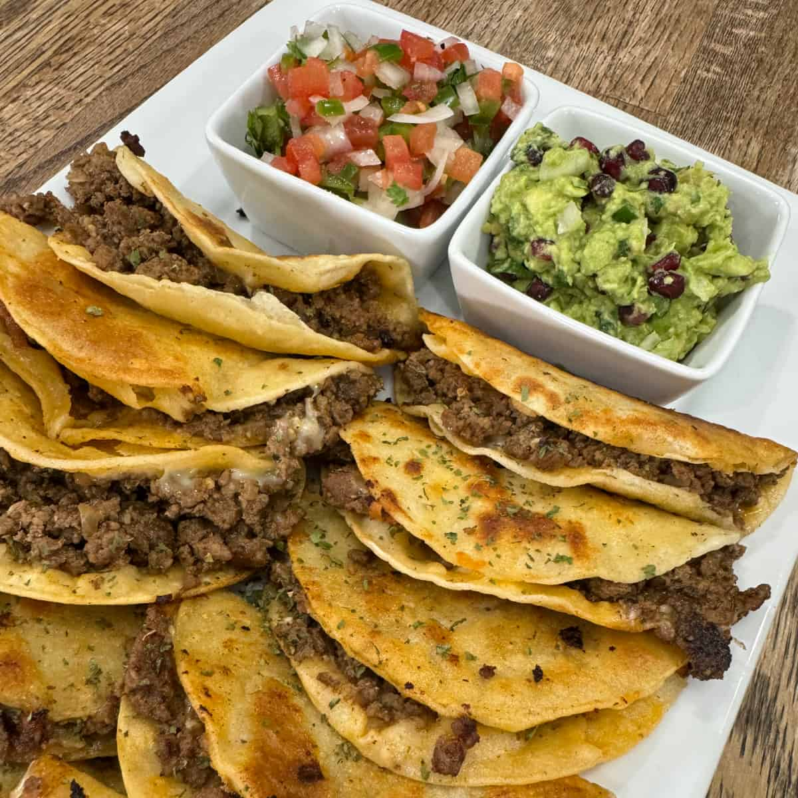

Homemade Beef Tacos

Midwest Beef Tacos
This recipe was sourced from the website 'Cooking in the Midwest'
Ingredients
- 2 lb ground beef
- 1 chopped onion
- 2 TBSP minced garlic
- 1 TSP each of salt and pepper
- 1/2 TSP cayenne
- 4 TSP chili powder
- 2 TSP each of cumin and dried cilantro
Steps
- Thaw Beef
- Chop onions
- Measure Seasoning
- Heat large skillet
- Season cooked meat
- Wait 20 minutes
- Build Tacos